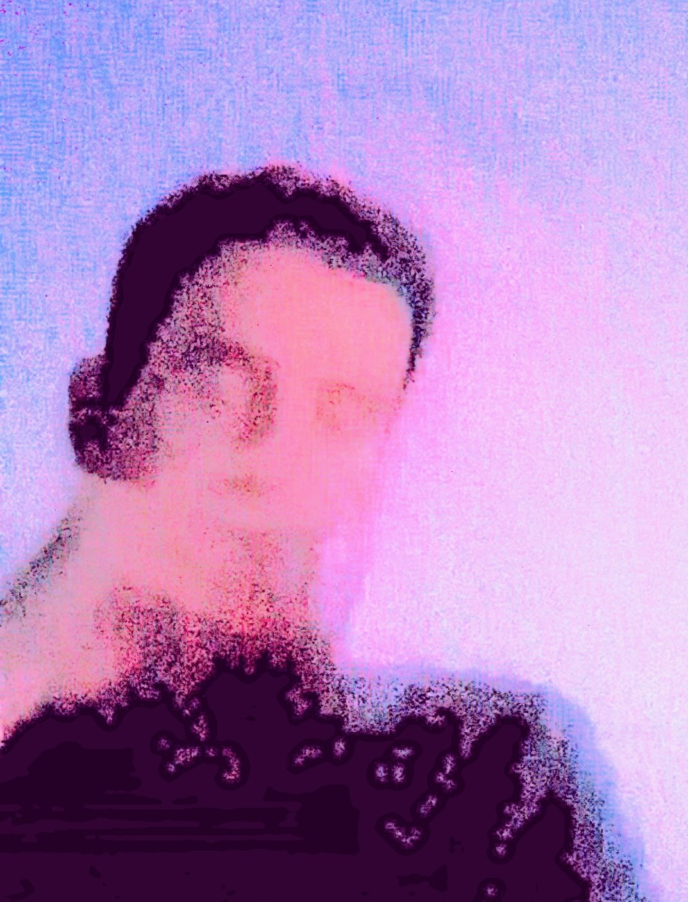
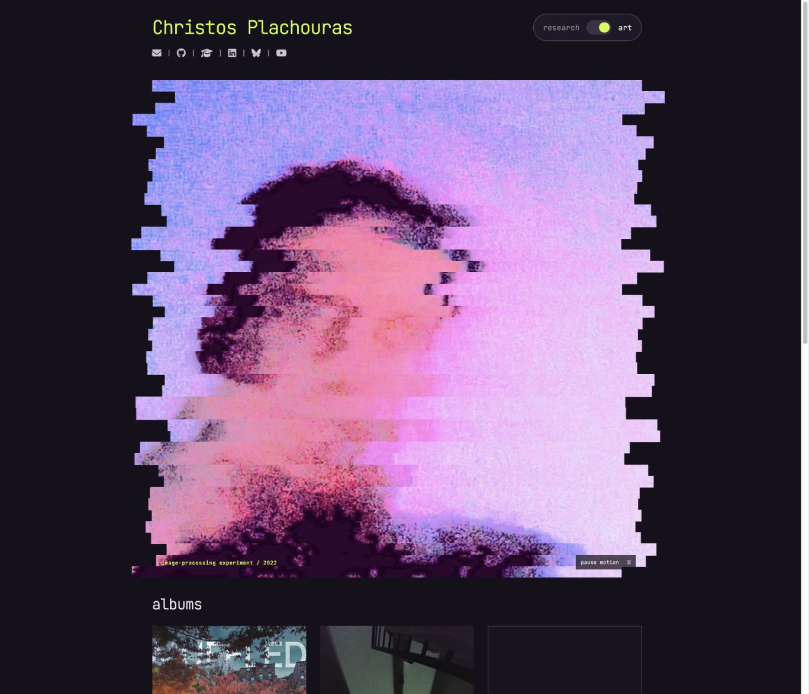

Research / Art
One person.
Two frequencies.
A quiet place to think. A stranger place to play.
Three ways to move between them.

signal
/ noiseRESEARCH ↔ ART
/ noiseRESEARCH ↔ ART
01 / Colour field
Signal / Noise
A clean editorial page opens into an immersive, slowly drifting poster. Switch with a circular colour bloom.
Explore studyout of
order.+
order.+
02 / Open gallery
Out of Order
A restrained reading room becomes a spacious art gallery. Image fragments float; a folding shutter changes the scene.
Explore study
03 / Revised direction
Research / Art
A familiar, compact research page switches into a dark art space. A taller animated portrait with drifting edges, followed by large album covers, music, and writing.
Explore revisionEvery study opens in research. Use the Research / Art switch to cross over.
Art motion can be paused. Reduced-motion preferences are respected.